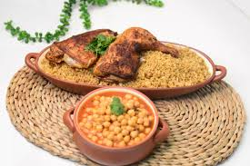
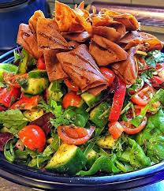
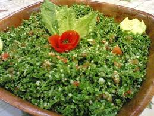
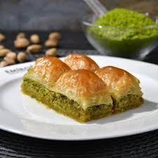

| أطباق الرئيسية |
| 1 |
ملوخية الدجاج |
أوراق الملوخية المغلية مع مرق وقطع الدجاج والليمون، يقدم هذا الطبق مع الأرز |
 |
| 2 |
ترافيل لحم |
ترافيل لحم التندرلوين مع الصوص وأصابع الاسبارغوس الطازجة مع المشروم والشيري طماطم |
 |
| 3 |
دجاج الداينميت |
مكعبات الدجاج المشوية، مع مزيج من الصلصة الحارة المكون من صوص السيراتشا، الفلفل، العسل، البابريكا والزبادي. يقدم مع الارز |
 |
| 4 |
مفتول |
طبق فلسطيني أصيل من حبيبات القمح المفروكة يدويًا، يُطهى على البخار ويُقدَّم مع مرق خضار غني وقطع دجاج متبلة بالتوابل التقليدية. نكهة بيتية دافئة بطابع تراثي |
 |
| 5 |
سمك المشوي |
سمك مع خلطة توابل مميزة من البهارات الاسيوية تقدم مع الارز |
 |
| المقبلات والسلطات |
| 6 |
ورق عنب |
ورق عنب محشي بالأرز |
 |
| 7 |
فتوش |
سلطة لبنانية مع طماطم وخضار موسمية |
 |
| 8 |
تبولة |
سلطة برغل مع بقدونس طازج وعصير ليمون |
 |
| الحلويات |
| 9 |
كنافة |
كنافة ناعمة محشوة بالجبنة الذائبة، مغطاة بالشيرة الساخنة لإحساس شرقي فاخر |
|
| 10 |
بقلاوة |
رقائق مقرمشة محشوة بالفستق أو الجوز، ومغطاة بطبقة خفيفة من القطر |
 |
| 11 |
كعكة موس الشوكولاتة |
حلى إيطالي فاخر بطبقات من البسكويت المغموس بالقهوة وكريمة الماسكاربوني الغنية |
 |